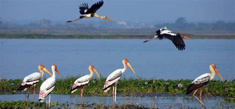
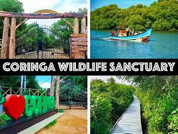
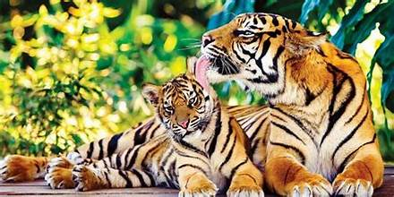
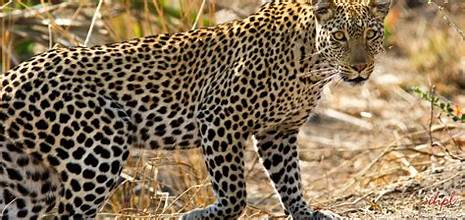
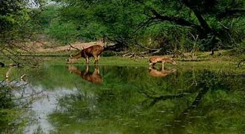

🌿🏞️ National Parks of Andhra Pradesh – Preserving Nature’s Glory 🐅🦜
🐘 1. Sri Venkateswara National Park 🌳

Location: Tirupati, Chittoor District
Area: 353 sq. km
Highlights:
Nestled in the Eastern Ghats, this park is home to diverse flora and fauna.
Fauna: Tigers, leopards, hyenas, sloth bears, and Indian giant squirrels.
Flora: Rich tropical and deciduous forests with species like red sanders and sandalwood.
Attraction: Waterfalls like Talakona, Gundalakona, and Gunjana enhance the natural beauty.
🐅 2. Papikonda National Park 🏞️

Location: East Godavari and West Godavari Districts
Area: 1,012 sq. km
Highlights:
Located along the Godavari River, this park is a paradise for nature lovers and wildlife enthusiasts.
Fauna: Tigers, gaurs, sambar deer, panthers, and wild boars.
Flora: Dense tropical rainforests, bamboo groves, and teak plantations.
Attraction: Scenic boat rides on the Godavari and a glimpse of tribal culture.
🦚 3. Rajiv Gandhi National Park (Rameswaram National Park) 🌱
Location: Nagarjunasagar-Srisailam Tiger Reserve (Partly in Andhra Pradesh and Telangana)
Area: 2,377 sq. km (combined with Tiger Reserve)
Highlights:
A part of the largest tiger reserve in India, spread across the Nallamala Hills.
Fauna: Tigers, leopards, sloth bears, mugger crocodiles, and spotted deer.
Flora: Dry deciduous forests, bamboo thickets, and medicinal plants.
Attraction: Eco-tourism activities such as safari rides and trekking trails.

🦢 4. Kolleru Lake Wildlife Sanctuary (Wetland National Park) 🦆

Location: West Godavari and Krishna Districts
Area: 308 sq. km
Highlights:
One of the largest freshwater lakes in India, declared a Ramsar site.
Fauna: Migratory birds such as pelicans, painted storks, flamingos, and cormorants.
Flora: Aquatic vegetation and marshlands that support diverse wildlife.
Attraction: Birdwatching paradise, especially during winter migration.
🐊 5. Coringa Wildlife Sanctuary (Mangrove Ecosystem) 🌊
Location: East Godavari District
Area: 235 sq. km
Highlights:
Home to India’s second-largest stretch of mangroves, supporting unique biodiversity.
Fauna: Saltwater crocodiles, fishing cats, otters, and migratory birds.
Flora: Dense mangroves with species like Avicennia, Rhizophora, and Excoecaria.
Attraction: Boat rides through mangrove forests and birdwatching during peak season.

🦅 6. Pulicat Lake Bird Sanctuary (Wetland National Park) 🐦

Location: Nellore District (Partially shared with Tamil Nadu)
Area: 759 sq. km
Highlights:
The second-largest brackish water lagoon in India, attracting thousands of migratory birds.
Fauna: Flamingos, pelicans, herons, and other wading birds.
Flora: Aquatic vegetation and mangrove patches that support avian biodiversity.
Attraction: Flamingo Festival held annually, showcasing vibrant birdlife.
🦧 7. Nagarjunasagar-Srisailam Tiger Reserve 🐯
Location: Nallamala Hills (Andhra Pradesh & Telangana)
Area: 3,568 sq. km (largest tiger reserve in India)
Highlights:
Rich in biodiversity and home to the endangered Bengal tiger population.
Fauna: Tigers, leopards, wild dogs, sloth bears, and sambar deer.
Flora: Dry deciduous forests, thorny shrubs, and grasslands.
Attraction: Safari tours, nature camps, and trekking expeditions.

🦜 8. Rollapadu Wildlife Sanctuary (Grassland Ecosystem) 🦅

Location: Kurnool District
Area: 6.14 sq. km
Highlights:
Dedicated to protecting the endangered Great Indian Bustard.
Fauna: Blackbucks, Indian foxes, jackals, and a variety of avian species.
Flora: Arid grasslands and shrublands that support diverse wildlife.
Attraction: Ideal for birdwatchers and wildlife photographers.
🦇 9. Gundla Brahmeswaram Wildlife Sanctuary 🌲
Location: Prakasam and Kurnool Districts
Area: 1,194 sq. km
Highlights:
Dense forests and rugged terrain of the Nallamala Hills provide a haven for wildlife.
Fauna: Leopards, jungle cats, sloth bears, and pangolins.
Flora: Tropical deciduous forests and medicinal plants.
Attraction: Ideal for trekking and nature exploration.

🐾 10. Krishna Wildlife Sanctuary (Mangrove Ecosystem) 🌊

Location: Krishna District
Area: 194 sq. km
Highlights:
A mangrove ecosystem that serves as a breeding ground for diverse marine and bird species.
Fauna: Fishing cats, otters, reptiles, and migratory birds.
Flora: Mangrove forests and wetland vegetation.
Attraction: Birdwatching, nature trails, and boating activities.
🐢 11. Uppalapadu Bird Sanctuary 🦩
Location: Guntur District
Area: 9 sq. km
Highlights:
A small yet significant sanctuary known for its large pelican population.
Fauna: Painted storks, pelicans, and other migratory birds.
Flora: Aquatic vegetation supporting a thriving bird population.
Attraction: Perfect for birdwatching enthusiasts and nature lovers.